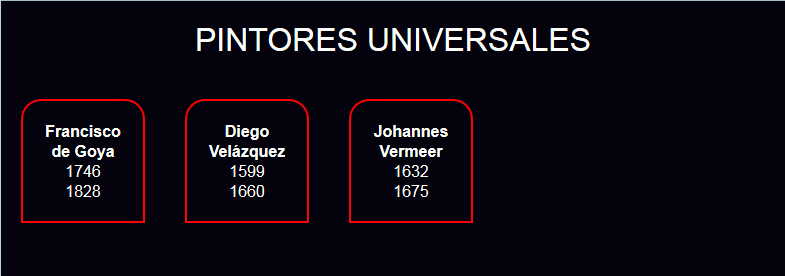

Resuelva los siguientes ejercicios guardando las respuestas en una carpeta cuyo nombre contenga su nombre y apellidos.
Escriba la hoja de estilo CSS para que el siguiente documento se vea en el navegador como muestra la imagen.
<?xml version="1.0" encoding="UTF-8"?>
<pintores>
<titulo>Pintores universales</titulo>
<pintor id="Goya">
<nombre>Francisco de Goya</nombre>
<nacido>1746</nacido>
<fallecido>1828</fallecido>
<nacionalidad>España</nacionalidad>
</pintor>
<pintor id="Velazquez">
<nombre>Diego Velázquez</nombre>
<nacido>1599</nacido>
<fallecido>1660</fallecido>
<nacionalidad>España</nacionalidad>
</pintor>
<pintor id="Vermeer">
<nombre>Johannes Vermeer</nombre>
<nacido>1632</nacido>
<fallecido>1675</fallecido>
<nacionalidad>Holanda</nacionalidad>
</pintor>
</pintores>
Captura del navegador (resolución 800 x 600):

Dado el siguiente documento XML, escriba las expresiones XPath que devuelvan exactamente la respuesta indicadas en los cuadros. Escriba todas las expresiones XPath en un único fichero de texto, numerando las respuestas.
<?xml version="1.0" encoding="UTF-8"?>
<arte>
<museos>
<museo id="Prado">
<nombre>Museo del Prado</nombre>
<pais>España</pais>
<ciudad>Madrid</ciudad>
<creacion>1819</creacion>
</museo>
<museo id="Louvre">
<nombre>Musée du Louvre</nombre>
<pais>Francia</pais>
<ciudad>París</ciudad>
<creacion>1793</creacion>
</museo>
</museos>
<pintores>
<pintor id="Goya">
<nombre>Francisco de Goya</nombre>
<nombreCompleto>Francisco José de Goya y Lucientes</nombreCompleto>
<nacido>1746</nacido>
<fallecido>1828</fallecido>
<nacionalidad>España</nacionalidad>
</pintor>
<pintor id="Velazquez">
<nombre>Diego Velázquez</nombre>
<nombreCompleto>Diego Rodríguez de Silva y Velázquez</nombreCompleto>
<nacido>1599</nacido>
<fallecido>1660</fallecido>
<nacionalidad>España</nacionalidad>
</pintor>
<pintor id="Vermeer">
<nombre>Johannes Vermeer</nombre>
<nombreCompleto>Johannes Vermeer van Delft </nombreCompleto>
<nacido>1632</nacido>
<fallecido>1675</fallecido>
<nacionalidad>Holanda</nacionalidad>
</pintor>
</pintores>
<cuadros>
<cuadro autor="Goya" museo="Louvre" fecha="1794" titulo="La condesa del Carpio, marquesa de La Solana" />
<cuadro autor="Goya" museo="Prado" fecha="1814" titulo="Los fusilamientos del 3 de mayo" />
<cuadro autor="Goya" museo="Prado" fecha="1798" titulo="La maja desnuda" />
<cuadro autor="Velazquez" museo="Prado" fecha="1629" titulo="Los borrachos" />
<cuadro autor="Vermeer" museo="Louvre" fecha="1670" titulo="La hilandera" />
<cuadro autor="Vermeer" museo="Prado" fecha="1665" titulo="Mujer con aguamanil" />
</cuadros>
</arte>
Museo del Prado
Musée du Louvre
<nacido>1746</nacido>
<nacido>1599</nacido>
61
Diego Rodríguez de Silva y Velázquez
Johannes Vermeer van Delft